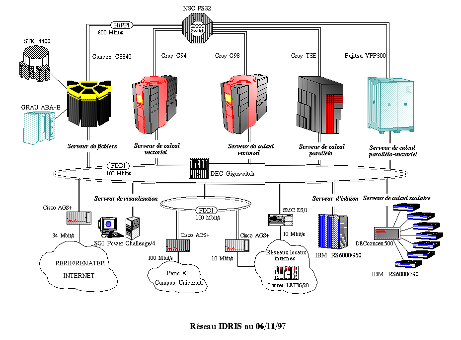
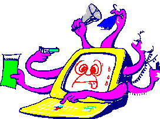

L'unicité et la qualité de l'environnement de calcul scientifique d'IDRIS (quatre supercalculateurs de grande qualité, une diversité de serveurs, des moyens de stockage des données très performants) nécessitent une protection toute particulière. Par ailleurs, IDRIS doit s'astreindre à maintenir un très haut niveau de souplesse et d'ouverture car il est indispensable de ne pas entraver l'efficacité du travail des utilisateurs scientifiques. Mais IDRIS doit aussi renforcer son dispositif de sécurité physique et informatique pour se mettre en conformité avec les normes de protection d'un outil national de production de science.
Il est évident que cette évolution nous a conduit à une réflexion très approfondie sur la sécurité informatique en raison de notre grande ouverture à l'ensemble de la communauté scientifique via RENATER. À ce propos, je vous renvoie à l'éditorial de Christian Michau, dans le précédent numéro, plus que pertinent sur le sujet et qui mérite plusieurs relectures.
La sécurité informatique est l'affaire de tous. IDRIS peut y réfléchir à l'infini et continuer à filtrer les adresses IP des machines qui se connectent à ses supercalculateurs, leur nombre devenant de plus en plus important (plusieurs centaines à ce jour). IDRIS a le devoir d'assurer sa propre sécurité informatique et celle d'un vaste réseau national de machines de tous types. Nul n'ignore que la santé et la robustesse d'un système complexe résident dans son point faible.
Nous ne parviendrons jamais à atteindre le niveau de sécurité requis (qui intéresserait au plus haut point quelques partenaires industriels) sans l'aide active de nos utilisateurs. Cette communauté n'a jamais eu et n'aura jamais d'actions malveillantes, mais elle s'abandonne quelquefois à une certaine légèreté. Des identifiants de session sont encore "prêtés" à des thésards ou à des visiteurs pour éviter des tracasseries administratives. Des chercheurs ou autres quittent les laboratoires sans que nous en soyons informés. Cas habituels qui génèrent d'éventuelles défaillances dans notre système de sécurité et doivent être proscrits.
Sommes-nous trop exigeants ? Je ne le crois pas. Le fait de ne pas disposer de données sensibles ne justifie aucunement la négligence. La perte ou la détérioration des données représentant des mois - voire des années - de travail sur nos supercalculateurs aurait des conséquences catastrophiques pour la recherche.
Nous espérons donc vivement que la communauté des utilisateurs comprenne très vite notre souci de sécurité pour l'intégrer à sa démarche quotidienne et assurer ainsi la pérennité d'un outil de travail jugé incontournable.
V. Alessandrini
Directeur de l'Institut du Développement et
des
Ressources en Informatique Scientifique (IDRIS)

Ce que sauvegarder veut dire ! |
Un brillant étudiant - on l'appellera Christian Martin pour la petite histoire - devait présenter sa thèse dans quelques semaines. Trois ans d'un dur et passionnant travail ; des jours, des soirées, des week-ends passés en tête à tête avec son ordinateur, surtout depuis qu'il "rédige" ; Maintenant, c'était presque fini. Bientôt, il sera diplômé et pourra, espère-t-il, se présenter aux concours du printemps prochain. Plus que quelques corrections - du pinaillage - pour satisfaire les examinateurs. Tout est enregistré sur le disque dur : les six chapitres et les annexes, des courriers électroniques importants - avis, critiques, commentaires sur la thèse sollicités auprès de personnalités, contacts pour un post-doc, encouragements et recommandations -, les programmes, les calculs et les résultats soigneusement classés. Trois ans de travail. Christian Martin est très prudent : "Je fais une sauvegarde partielle de mon disque tous les soirs, et, tous les vendredis, une sauvegarde générale". Il a deux jeux de bandes en permanence, qu'il range soigneusement dans son tiroir fermé à clé : "Ce serait trop bête si, en cas de panne, je ne pouvais pas relire une bande !". Il est satisfait de lui : "Combien parmi mes condisciples en font autant ?".
Et pourtant... Un matin, quand il est arrivé à son laboratoire, on avait volé son ordinateur et forcé les tiroirs de son bureau. Les bandes avaient disparu.
Son voleur n'était probablement intéressé que par le matériel et n'avait pris les bandes que par vice. Mais pour lui "c'est la totale !".
Encore une mauvaise fiction pour la TV du samedi soir ? Erreur ! Même si elle ne se termine pas toujours d'une manière aussi dramatique, cette histoire - avec ses nombreuses variantes - arrive plusieurs fois par an. Par exemple, sur les disques durs des micro-ordinateurs des secrétariats, il y a parfois toute la comptabilité du laboratoire et d'autres informations tout aussi vitales qui seraient bien difficiles à reconstituer. Sauvegarde-t-on systématiquement les disques des MAC et des PC ? Pourtant le destin d'un disque dur est de tomber en panne. Toujours au plus mauvais moment ! Ce n'est qu'une question de temps...
Dans l'affaire de notre pauvre Christian Martin, plusieurs fautes de sécurité ont été commises :
Malgré tous les avertissements et conseils que l'on peut donner,
durant l'année 1998, comme pour les précédentes années,
d'autres Martin apprendront à leurs dépens ce que sauvegarder
veut dire. Martin n'est-il pas le nom le plus fréquent en France
?

Par Lionel MAURICE
Responsable de la Sécurité des systèmes d'information à l'IDRIS
La sécurité des systèmes d'information de l'IDRIS est un élément clé de la qualité de la recherche pour tous les laboratoires qui utilisent ses services et ses ressources. Elle constitue une priorité pour sa Direction et une préoccupation permanente pour son personnel, spécialement formé à cela. Elle a son grand-prêtre, Lionel Maurice, ingénieur de recherche première classe, qui nous présente ce prestigieux institut et les solutions adoptées.

| Le réseau interne est relié principalement au réseau régional d'Ile-de-France par une liaison à 34 Mbits/s. Un groupe de routeurs filtrants judicieusement disposés protège l'ensemble de production. |
Créé officiellement le premier novembre 1993 afin de perpétuer et développer les services du Centre de Calcul Vectoriel pour la Recherche (dont le contrat de GIE arrivait à terme), l'Institut a pour mission de mettre à la disposition de la recherche française les moyens de calculs intensifs indispensables à son évolution et à sa promotion internationale. À la fois centre de ressources informatiques et pôle de compétences en calcul intensif de haute performance, IDRIS est une Unité Propre de Service du CNRS (S08510) rattachée au département des Sciences pour l'ingénieur, mais dont la vocation est interdépartementale.
Pour effectuer sa mission de centre de calcul intensif, IDRIS est structuré en services.
Cinq équipes, coordonnées par la direction, mènent en concertation les actions nécessaires à la bonne marche de la production (24 heures sur 24, 7 jours sur 7) : l'exploitation (15 agents), le groupe "système" (10 agents), l'assistance aux utilisateurs (14 agents), la visualisation (4 agents) et le service "réseaux et informatique interne" (5 agents).
Le fonctionnement interne est assuré par le secrétariat (3 agents), l'administration (4 agents) et le service de documentation (2 agents).
Quatre missions spécifiques ont été confiées à des membres de l'Institut en relation étroite avec la direction :
Une présentation plus détaillée peut être consultée sur le serveur d'informations http ://www.idris.fr.
Les ressources (en quotas d'heures et d'espaces de stockage) sont attribuées par le Conseil scientifique après examen des dossiers par des commissions (les Comités de programme) sur présentation d'un projet de recherche scientifique. Le projet, piloté par un responsable de l'équipe attributaire (interlocuteur vis-à-vis d'IDRIS), est l'entité de base sur laquelle s'établit la gestion administrative et technique des ressources allouées (ouverture et fermeture des accès, comptabilité, etc.). Aujourd'hui, IDRIS assure le support de plus de 500 projets par an, relevant de neuf Comités de programme allant de la mécanique des fluides jusqu'à la chimie quantique en passant par l'astronomie. Ces projets englobent plus de 3000 comptes - les quantités en varient pratiquement tous les jours - dont, en chiffres ronds, 1500 en vectoriel, 500 en parallèle, 500 en scalaire, 300 en vectoriel/parallèle et 200 en visualisation.
Un laboratoire peut parfaitement présenter plusieurs projets différents simultanément, c'est le cas le plus fréquent. Les équipes de recherche sont réparties dans un peu moins de 400 laboratoires qui mettent à leur disposition les moyens d'accéder aux ressources d'IDRIS. Ces laboratoires ont leur part de responsabilité dans la prévention globale des risques liés à l'usage de l'informatique, non seulement pour eux-mêmes mais aussi eu égard à l'outil de travail mis en commun ; de ce point de vue, le directeur de l'unité ou son mandataire se doit d'agir de concert avec l'Institut.
Les laboratoires déclarent plus de 2000 machines informatiques susceptibles d'établir une connexion avec un des serveurs de production. Celles-ci se composent de 190 serveurs, 910 stations de travail, 530 terminaux X, 200 PCs et 180 MACs. Ces quantités sont aussi très fluctuantes : c'est dire qu'il faut en assurer une gestion quotidienne (voir ci-dessous le filtrage).
La préoccupation première de bon nombre d'organismes concerne la confidentialité et l'intégrité des données ; dans un centre tel que le nôtre, la disponibilité de ces données et la continuité de service de l'outil de production sont aussi importantes, si ce n'est primordiales. Ces objectifs nécessitent d'avoir une vue globale de la sécurité, aussi bien sur le plan des menaces physiques que logiques, allant des erreurs aux malveillances en passant par les négligences et accidents. Nous n'aborderons pas ici l'aspect physique ni les causes accidentelles : signalons simplement une refonte complète en cours du plan de protection du site.
Basée sur les principes suivants :
Dès sa création, IDRIS s'est doté d'un responsable de la sécurité des systèmes d'information (RSSI), puis d'un adjoint qui ont pour mission d'assurer cette cohérence : leurs actions se situent sur le plan de la sensibilisation, de la cohésion entre les différentes équipes et du suivi des moyens mis en uvre. Ainsi, les mesures les plus significatives ont été décidées très tôt.
La sensibilisation du personnel est continue, par la diffusion d'informations sur des événements révélateurs, la mise à disposition de documents tels "Mon micro et moi" du CNPP/CLUSIF ou du bulletin "Sécurite informatique" du CNRS. Les agents d'IDRIS, impliqués ou non dans la sécurité, sont fortement incités à participer aux stages qui nous sont proposés ; de plus, une formation sur la sécurité est assurée à l'Institut dans le cadre d'un cours sur le système UNIX ouvert à tous.
Bien avant la promotion des chartes de bon usage des moyens informatiques, les utilisateurs devaient et doivent toujours s'engager à protéger leur compte en signant un document qui fera désormais référence à la charte instituée par le CNRS.
Dès le début, la gestion des comptes, pour tous les systèmes, a été centralisée sur un SGBD avec une procédure rigoureuse d'ouverture et de fermeture.
Sans entrer dans les détails de toutes les précautions prises, voici, essentiellement, ce qui existe et ce qui devient incontournable de faire face à l'extension massive de la délinquance informatique.
L'application rapide des correctifs fournis dans les avis des différents organismes de prévention (UREC, RENATER, CERT, CIAC et autres), et des constructeurs, complète bien entendu ces mesures.
La seule solution passera par une authentification forte : le mot de passe "une fois" (One Time Password, OTP en abrégé). Seulement, deux obstacles sont difficiles à surmonter, le maintien du confort de l'accès direct en interactif, celui des commandes à distance et l'utilisation de la soumission de travaux en différé. Pour l'interactif, aucun constructeur ou fournisseur ne peut assurer actuellement le fonctionnement de son "authentifieur" (calculette, token, etc.) pour toutes les applications (TELNET, FTP, XDM, etc.) ni sur toutes les plates-formes, et ne pourra probablement pas assumer cette diversité à l'avenir ; il faut donc centraliser l'authentification. Le plus immédiat et le plus simple consiste à mettre en uvre un pare-feu (fire-wall), mais ce sera au détriment du confort en question : les usagers l'accepteront-ils ? Certains centres ont imposé de telles restrictions. Nous recherchons encore une façon d'échapper à ce dilemme, mais la pression devient de plus en plus forte, et nous sommes à l'écoute de toute proposition. Quant à la soumission de travaux en différé, elle nécessite une adaptation substantielle et complexe du logiciel NQE tant côté serveur que client ; il faut s'orienter vers une solution utilisant la signature électronique.
Mis à part les systèmes proprement dits et leurs fichiers annexes dont la sauvegarde est effectuée de façon classique, la protection des données appartenant aux utilisateurs est assurée par leurs propres soins au moyen des mécanismes disponibles sur chaque système. La quantité d'informations est telle (mesurée en tera-octets) qu'il est matériellement impossible de les sauvegarder dans leur ensemble ; cependant une procédure de duplication et de stockage dans un autre site est appliquée en ce qui concerne les données archivées. Là aussi, des actions de prévention sont menées pour aider les utilisateurs à maîtriser leurs choix, par exemple : contrôle de la protection de leurs répertoires principaux et de certains fichiers sensibles avec avertissement en cas d'insuffisance.
Il ressort de tout ceci que la sécurité des installations d'IDRIS dépend encore fortement de celle des laboratoires "clients" (et réciproquement). Rien de fiable ne pourra être fait sans la compréhension et l'adhésion de tous les intervenants.
Les moyens informatiques
L'IDRIS met aujourd'hui, à la disposition de la communauté scientifique le parc de machines le plus puissant d'Europe avec ses différents serveurs.
Ces machines constituent le noyau sensible de l'installation : l'ensemble des serveurs de production. |
Lionel Maurice
Tél. : 01 69 35 84 34
Courriel : RSSI@idris.fr
... Les brèves ... |

L'Observatoire de la Sécurité des Systèmes d'Information et des Réseauxcommunique |
Si vous êtes prêt à faire une présentation
au sein du groupe, contactez les animateurs Hervé Schauer <mailto:Herve.Schauer@hsc.fr> ou
Daniel Azuelos <mailto:dan@pasteur.fr>.

On peut consulter la liste complète des stages à : http://www.cnrs.fr/Infosecu/Protect.html

Sûreté de fonctionnement et sécurité des systèmes d'information |
 |
Le 4 juin 1996, le Centre de Kourou en Guyane s'offrait un feu d'artifice de 5 milliards de francs. La nouvelle fusée Ariane V, quarante secondes après son décollage, explosait en vol, conséquence d'un simple bogue dans un programme informatique. L'enquête rapporte les raisons de cet accident. La fusée Ariane V est équipée d'un gyrolaser permettant de calculer en permanence l'angle de l'axe de la fusée par rapport à la verticale. Le gyroscope effectue les mesures sur 32 bits. La composante horizontale de l'accélération est convertie pour être rangée dans un registre de 16 bits qui était utilisé par un programme informatique, hérité d'Ariane IV, pour calculer la vitesse horizontale de la fusée. Tant que cette composante horizontale de la poussée ne dépassa pas une valeur limite, comme c'était le cas avec Ariane IV, le programme remplit correctement sa fonction. Mais sur Ariane V, les moteurs sont beaucoup plus puissants et les poussées plus importantes. Le registre 16 bits a débordé. Le système de contrôle a alors considéré que le gyrolaser était en panne et a donné la main à l'appareil de secours. Ce second gyrolaser, effectuant les mêmes mesures, a été déclaré à son tour en panne et le système de sécurité a considéré que la fusée était perdue. En conséquence, il a déclenché son auto-destruction. Un bogue dans une conversion de format pour faire un calcul qui ne sert à rien (le calcul de la composante horizontale de la vitesse ne sert pas sur Ariane V) ce n'est qu'une simple, une toute petite erreur. Mais son coût a été énorme et à provoqué un retard de plus d'un an pour le programme du nouveau lanceur.
La sûreté de fonctionnement, dont relève cet accident, et la sécurité des systèmes d'information sont deux disciplines très proches, tant dans les méthodes d'analyse que dans les principes. La SSI n'est-elle pas au fond la sûreté de fonctionnement appliquée au système tout entier ? Des situations analogues - moins spectaculaires, mais comparables dans leurs coûts et leurs conséquences - sont rencontrées en SSI : le coût des défaillances de sécurité est évalué en France à plus de 20 milliards de francs, soit quatre Ariane V par an.
|  | Création de la liste de diffusion CNRS sur les virus |
Cette liste a pour objet :
Pour vous abonner, consulter la page http://www.services.cnrs.fr/Listes/